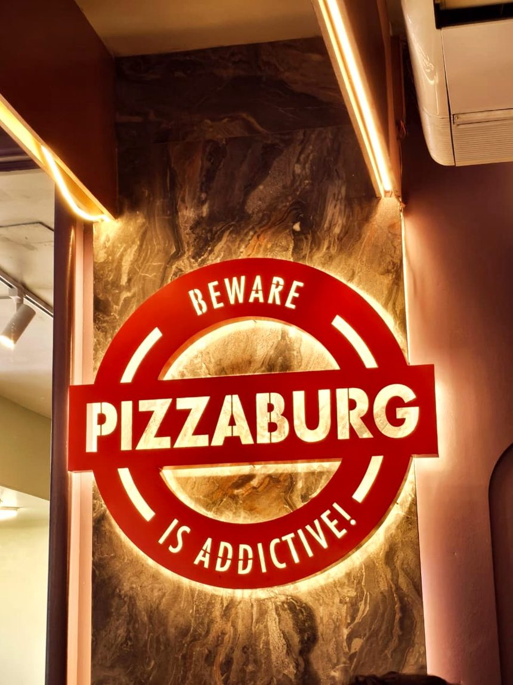
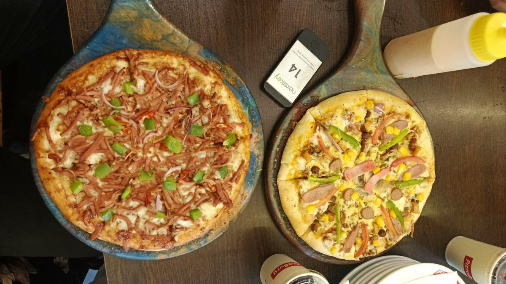
PizzaBurg
An analytical report based on a face-to-face interview with PizzaBurg's General Manager of Human Resource.
Raiyan Ahmed Ratul · Fabliha Mubarrat Kabir · Liya Akter
About the company,
and our objectives
Objectives of the study
- Examine PizzaBurg's Human Resource Management practices
- Cover workforce planning, recruitment, turnover, welfare, performance, training and discipline
- Compare those practices with the Bangladesh Labour Act 2006
- Identify strengths, concerns and practical recommendations
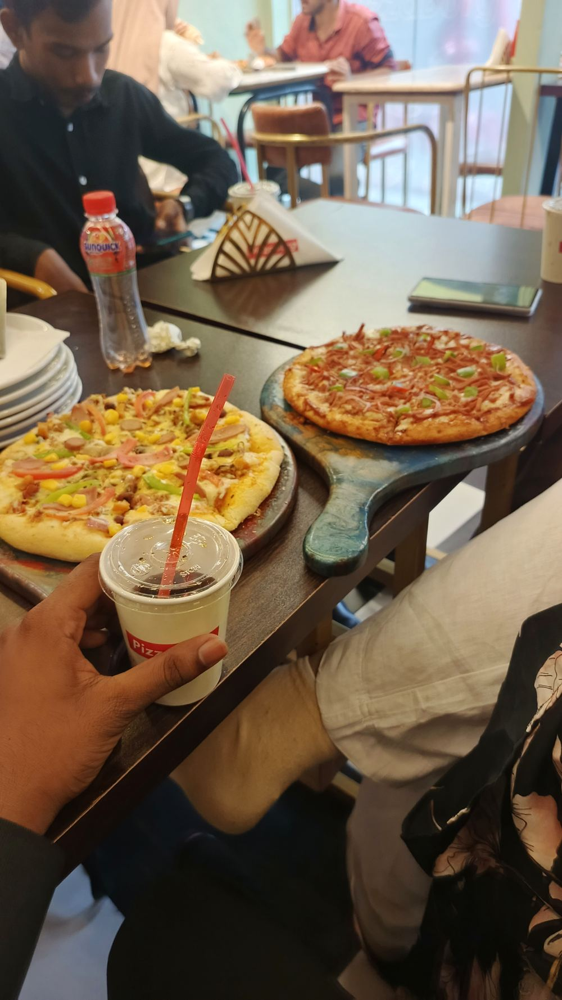
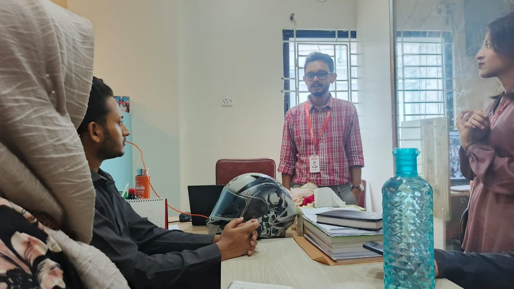
How we collected
our information
- Qualitative case study of a single company
- Primary data: one face-to-face interview
- Interviewee: Mr. Ranjan Datta, General Manager of Human Resource
- 26 August 2026, Dhaka
- Prepared questions with follow-ups; handwritten notes, at his request
- Secondary sources used only for background and the law
Limitation
One interviewee, one meeting. No documents seen, no employees interviewed. Where we say something was not evidenced, we mean it was not described to us — not that it does not exist.
A fixed number
at every outlet
- PizzaBurg operates 22 outlets across ten cities and towns
- Each outlet has a fixed number of employees
- Staffing is not determined through a supply-and-demand policy
- About 12 outlets are in Dhaka; the rest across nine other towns
Strength
Consistency and straightforward planning. Labour cost per outlet is predictable, rosters stay simple, and the same team works together.
Concern
Less flexibility when workload changes. No periodic review of the fixed numbers was described to us, so a headcount set on opening day can drift out of date.
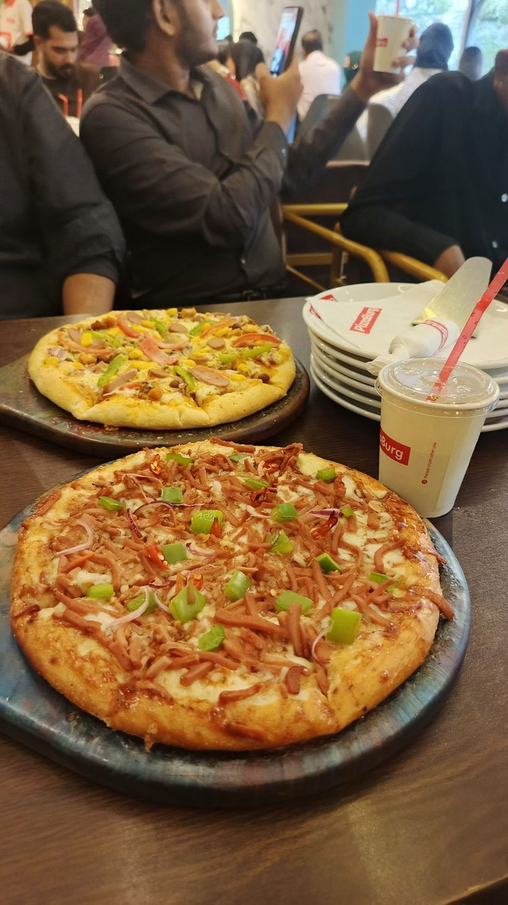

Hired in one day
- Applies to kitchen and floor staff (blue-collar roles)
- One-day process from interview to decision
- Practical experience is checked
- Candidates may be asked to demonstrate their ability on the job
- How candidates are sourced was not described to us
Strength
Better job-fit assessment. Watching a cook actually cook predicts performance far more reliably than an interview or a certificate.
Recommendation
Standardise the test with a one-page scoring sheet — the tasks, what to look for, and the minimum score that gets an offer — so all 22 outlets hire to the same standard.
Turnover and the
notice period
Office staff rarely leave the company.
Front-line staff turn over more often.
- No figures given — these are the manager's own words
- Every employee must give two months' notice before resigning
- It gives HR time to recruit a replacement
- Two months matches the 60 days Section 27 requires of a permanent worker
- Turnover is never counted, and leavers are not asked why they go

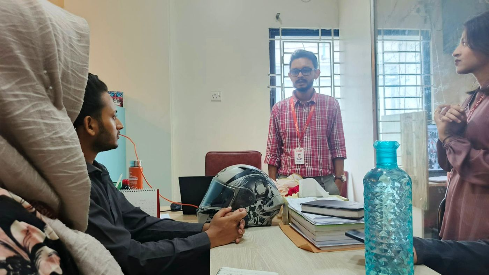
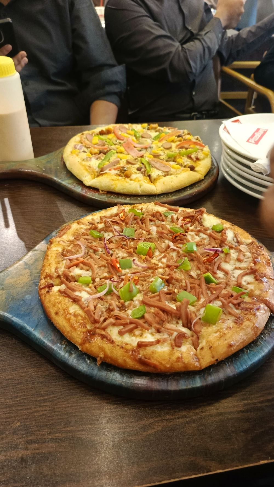

What employees
receive
Housing support for employees who qualify.
Provided during working hours.
Health checkups are provided.
Provided. Full §§45–50 entitlement not described.
Concern
Eligibility conditions were not explained, so applicants cannot count a benefit and staff may not know they qualify.
Reviewed monthly,
linked to training
Reviews feed directly into training.
Recommendation
Use clear, measurable indicators and document review outcomes.
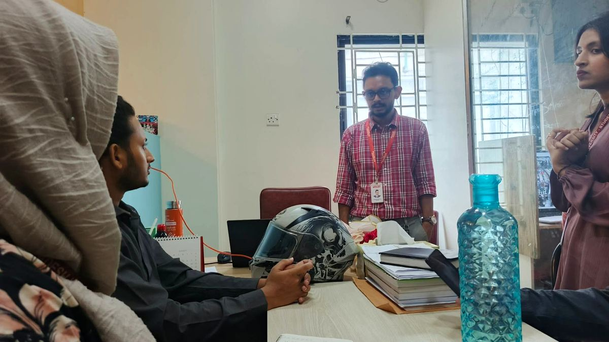
Grounds for
termination
- Violation of rules and regulations
- Sexual harassment
- Dishonesty and integrity violations
- Other serious misconduct
- No warning or inquiry procedure was described
Strength
Clear standards, broadly matching the misconduct list in §23(4). Naming sexual harassment explicitly is uncommon in this trade.
Recommendation
Write down the §24 procedure — written charge, 7 days to reply, a hearing, and a joint inquiry inside 60 days — and establish the sexual harassment complaint committee, with outside members, that the 2009 High Court directive requires.
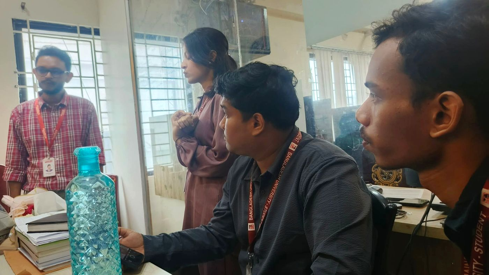
Major findings
- Fixed staffing across 22 outlets, not adjusted for demand
- Office turnover very low, floor turnover medium — but never counted
- Two months' resignation notice, matching the 60 days of §27
- One-day hiring with a practical test, but no marking sheet
- Monthly reviews linked to training, with no fixed measures described
- Welfare covering housing, food and health, eligibility unexplained
- Overall: the methods are sound, the records are missing
- Two gaps carry legal weight — no §24 procedure, no harassment committee
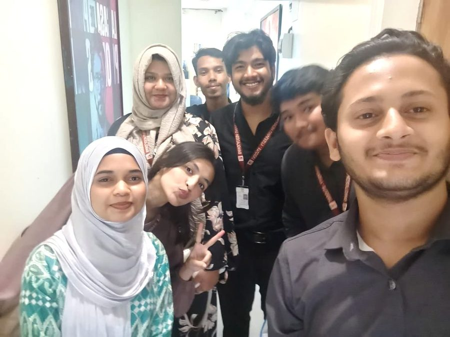
What we recommend
- Do first — urgent, near-zero cost
- Establish the sexual harassment complaint committee, with outside members
- Write down the §24 disciplinary procedure and issue it to every outlet manager
- Keep one central record per employee — appointment, reviews, training, discipline, exit
- Then
- Add a written scoring sheet to the practical hiring test
- Use a one-page monthly review form with measurable indicators
- Count turnover monthly, and use the 60-day notice for handover and exit interviews
- Review each outlet's headcount twice a year against real workload
- Explain welfare eligibility and open a promotion ladder to shift supervisor
- Add induction and supervisor training, plus a yearly Labour Act check
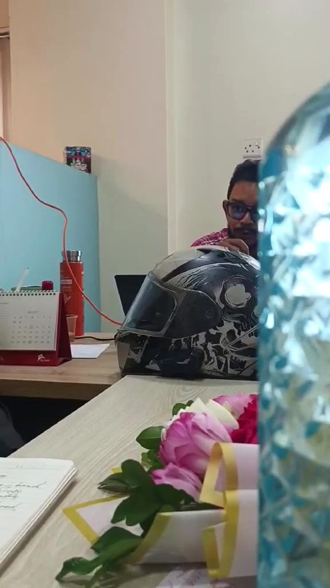

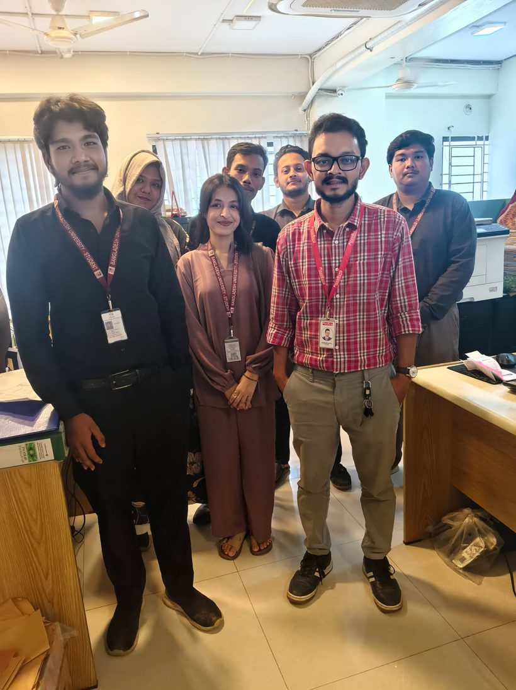
HRM built around
operational continuity
- Every practice serves one goal: keeping 22 outlets open and running
- Fixed staffing creates consistency; the notice rule turns a sudden loss into a planned one
- Practical selection supports job fit; monthly reviews catch problems in weeks, not months
- In every area the method was sound and the paperwork was missing
- Two gaps go beyond untidiness — no §24 procedure, no harassment committee
- The next task is to write the system down without losing the speed
Thank you.
Questions & discussion.
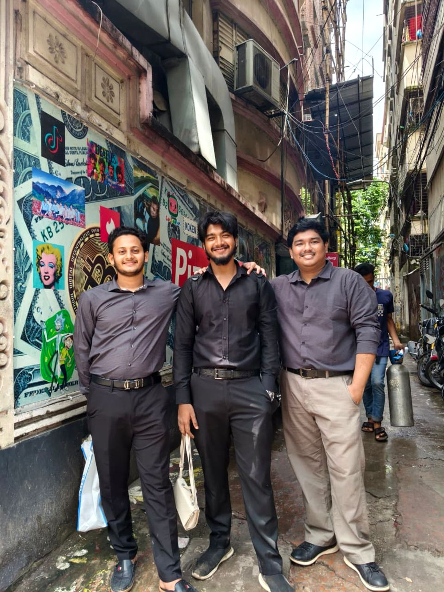